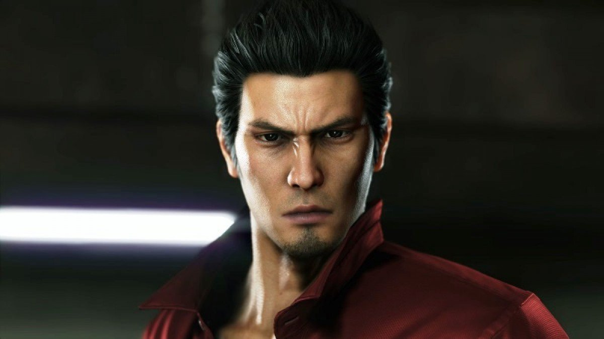
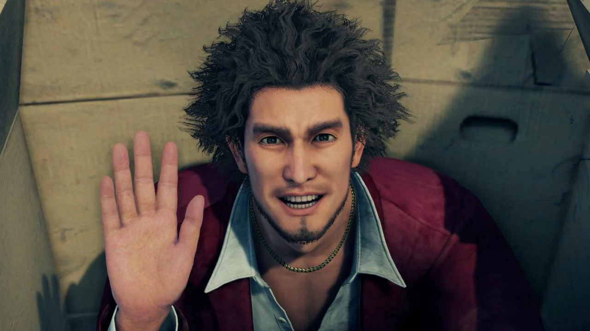
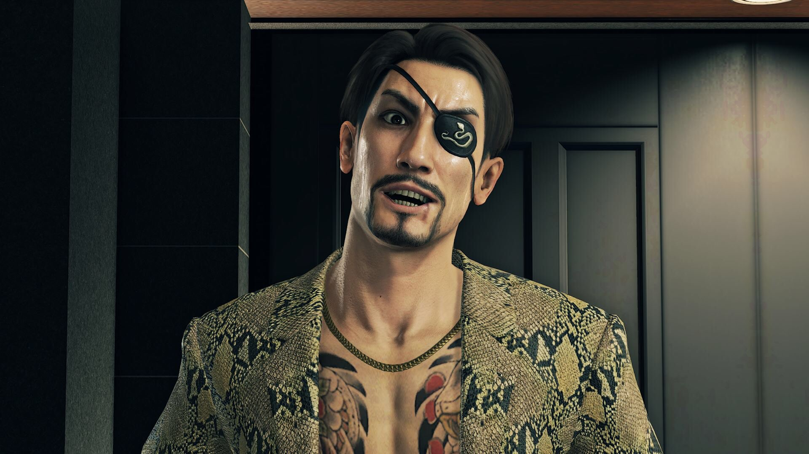
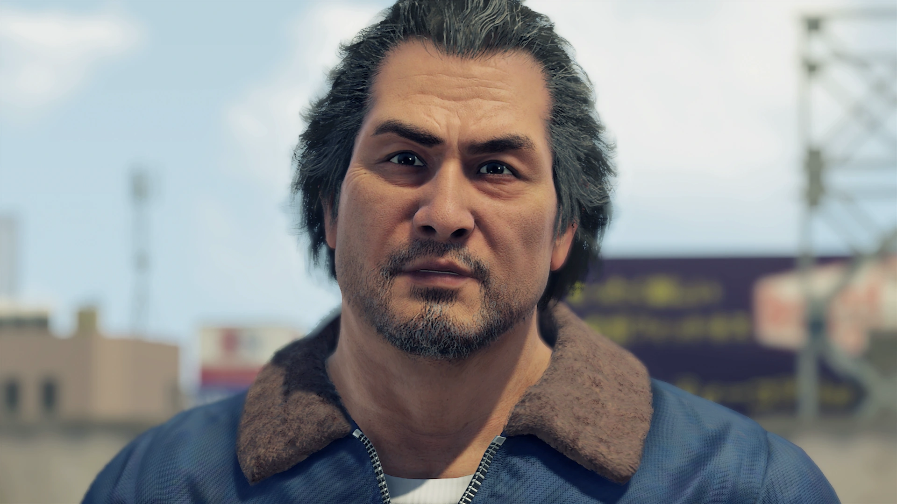
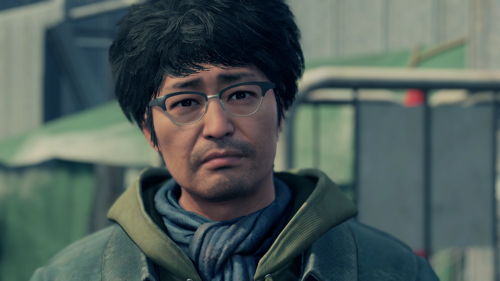
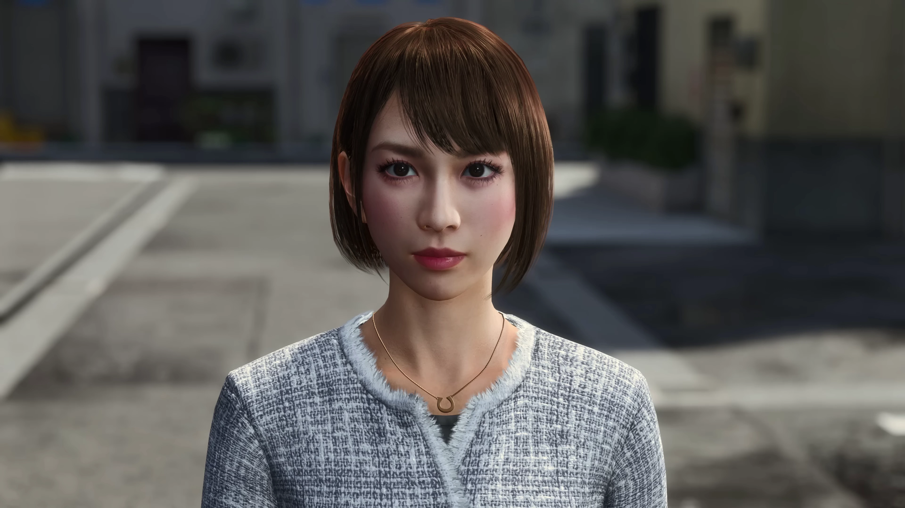

Ryu Ga Gotoku Studio é um estúdio de desenvolvimento de jogos eletrônicos, parte da divisão Sega CS Research and Development No. 1 da empresa japonesa de jogos eletrônicos Sega. É mais conhecido por desenvolver os jogos da série Yakuza desde Yakuza 5. Entretanto, o estúdio também desenvolve a série spin-off de Yakuza, Judgment, e jogos da série Super Monkey Ball desde 2019, bem como jogos autônomos, como Binary Domain.
Desde Yakuza 3, ele era chamado de Sega CS1 R&D, até a conclusão do desenvolvimento de Yakuza: Dead Souls. Depois disso, ele foi separado dessa divisão. O primeiro jogo a usar o logotipo original do estúdio foi Binary Domain no Japão, lançado em fevereiro de 2012. Eventualmente, o logo do RGG Studio começou a ser usado consistentemente e o estúdio formou sua própria marca e identidade.
De acordo com Masayoshi Yokoyama, uma das lideranças do estúdio, o estúdio não é uma empresa, mas com "conceito" ou uma "equipe de produção."[3] De qualquer forma, o logo e nome do estúdio começaram a ser usados internacionalmente de forma consistente.
Yakuza, também conhecida como Like a Dragon, é uma série de jogos eletrônicos de ação-aventura, beat 'em up e RPG publicada pela Sega. A série é composta por oito títulos principais, duas recriações e vários derivados. A ideia de Yakuza foi criada por Toshihiro Nagoshi, que desejava criar um jogo diferente do que estava sendo produzido na época e que fosse direcionado, especificamente, a homens japoneses, escolhendo se focar no mundo da yakuza e em seu drama humano.
Cada jogo é tipicamente um drama criminal, com enredos inspirados em filmes yakuza e dramas criminais japoneses de antes dos anos 2000. O protagonista mais frequentemente utilizado é Kazuma Kiryu, um yakuza reformado associado ao Clã Tojo, com sede em Kanto. Embora Kiryu muitas vezes se encontre trabalhando com os líderes do Clã Tojo para frustrar conspirações dirigidas contra eles, o tema principal da série é o seu desejo de deixar a yakuza para sempre e começar de novo, criando órfãos e tentando se integrar à vida civil. A jogabilidade envolve o controle de Kiryu, ou outros personagens, em um mundo aberto onde é possível enfrentar inimigos em brigas de rua e também participar de diferentes atividades paralelas, como karaokê, corridas de autorama, beisebol e outras.
Os jogos da série Yakuza foram grande sucessos comerciais e de crítica, especialmente no Japão, com a franquia como um todo já tendo vendido mais de doze milhões de cópias mundialmente, tanto no formato físico quanto no digital. Sua popularidade já gerou diversas adaptações em outras mídias fora dos jogos eletrônicos, como dois filmes, rádio dramas, uma websérie e vários tipos diferentes de livros, além de diversos outros produtos como brinquedos e álbuns musicais.
A série de jogos Yakuza se passa principalmente no distrito fictício de Kamurochō (神室町?), em Tóquio, baseado no distrito real de luz vermelha de Kabukichō. Outras locações reais reproduzidas na série de jogos incluem os distritos de Dōtonbori e Shinsekai, em Osaka (como "Sotenbori" e "Shinseicho" no jogo, respectivamente, em Yakuza 2, 5 e 0); Kokusai Dori e a área central de Naha, em Okinawa (como "Centro de Ryukyu" em Yakuza 3); Nakasu, Fukuoka (como "Nagasugai" em Yakuza 5); Susukino, Hokkaido (como "Tsukimino" em Yakuza 5); o distrito de Sakae, em Nagoia (como "Kineicho" em Yakuza 5); Onomichi, em Hiroshima (em Yakuza 6: The Song of Life); e Isezakichō, em Yokohama (como "Isezaki Ijincho" em Yakuza: Like a Dragon).
Os visuais dos distritos e cidades nos jogos são baseado nos locais reais, contemporâneos ao ano de lançamento do jogo, e são frequentemente renovados e remodelados para jogos mais novos. Entretanto, certas lojas e edifícios muitas vezes carregam marcas fictícias ou são diferentes se comparados a suas versões reais, substituindo-os com tie-ins ou locais importantes à trama.
Luke Plunkett da Kotaku elogiou a recriação detalhada de distritos específicos, incluindo "coisas trivias e incidentais" que permite a exploração virtual de locais reais. Apesar de não ser explicitamente vendido como "turismo virtual", Malindy Hetfeld, da Eurogamer, notou que "Yakuza ainda te dá a melhor chance de realmente se engajar com um país e suas pessoas. [...] [Ele] se tornou uma conexão a um país que eu amo muito, não por causa das paisagens que ele me mostra, mas por causa de todas as coisas triviais que ele me deixa fazer." Alguns fãs foram inspirados pelos jogos a visitar os distritos e cidades reais.
Todos os jogos Yakuza contam com três modos distintos mas conectados chamados Evento, Aventura e Batalha. O personagem principal encontra aleatoriamente inimigos em seu caminho, iniciando uma Batalha. Em lutas, o personagem do jogador usa combate corpo a corpo, com habilidades como combos, agarrões, arremessos e ataques de finalização, e alguns jogos permitem que o jogador escolha entre vários estilos de luta. Armas e objetos também podem ser usado, mas armas de fogo são raras.
Vencer algumas dessas batalhas resulta em dinheiro ou itens que podem ser vendidos ou usados para comprar equipamento ou uma variedade de itens em lojas, aposta ou jogar minijogos. Batalhas causadas pela história podem ser terminadas mais rapidamente derrotando o líder dos inimigos, bem como usando movimentos poderosos chamados ações "Heat", que requerem o preenchimento do medidor "Heat" para serem usadas. Algumas dessas ações incluem quick time events. A medida que o protagonista luta, ele ganha pontos de experiência que podem ser usados para aumentar suas estatísticas e se tornar um lutador mais forte.
O jogo mais recente da série, Yakuza: Like a Dragon, inclui um novo sistema de batalha onde o jogador recruta membros para seu grupo para lutarem a seu lado em batalhas por turnos, e para ajudá-lo em minijogos. Graças ao sucesso de Like a Dragon, a Sega confirmou que futuros jogos da série Yakuza continuarão a usar a jogabilidade por turnos, enquanto a série Judgment continuará com a jogabilidade de ação de títulos anteriores.
A série tem um grande número de subtramas, que muitas vezes complementam a história principal. Elas dão ao jogador pontos de experiência adicionais. Há muitos minijogos, que vão de atividades como boliche, dardos e jogos de fliperama, a jogos muito mais complexos, como profissões que podem levar horas para completar. Um chefão recorrente conhecido como Amon aparece em grande parte dos jogos. Dependendo no título, pode haver mais de um. Por exemplo, Yakuza 5 inclui um Amon para cada personagem jogável, incluindo uma versão idol para Haruka.
O protagonista principal da série é Kazuma Kiryu, que é jogável em todos os jogos da série principal até Yakuza 6: The Song of Life. Alguns jogos, como Yakuza 4 e Yakuza 5, incluem vários personagens jogáveis, com o jogador trocando entre eles em pontos predeterminados na história. Em Yakuza: Like a Dragon, Ichiban Kasuga se tornou o novo protagonista da série, com Kiryu aparecendo como um NPC. Ambos são protagonistas do jogo seguinte.
Outros personagens já apareceram como protagonistas de títulos spin-off. Os títulos ambientados na era dos samurais Ryū ga Gotoku Kenzan! e Ryū ga Gotoku Ishin! são baseados em versões ficcionalizadas das figuras históricas Miyamoto Musashi e Sakamoto Ryōma, respectivamente, ambos com modelos baseados em Kiryu. A subsérie Kurohyō: Ryū ga Gotoku conta com seu próprio protagonista Tatsuya Ukyo,[38] enquanto a série Judgment segue o detetive particular Takayuki Yagami.
     Até 2021, a série Yakuza / Like a Dragon inclui oito jogos principais, lançados em ordem cronológica (com a exceção da pré-sequência Yakuza 0), com cada título seguindo os eventos do título anterior. Também há diversos jogos spin-off lançados. Um deles, Ryū ga Gotoku Kenzan!, relata a história de um suposto antepassado de Kazuma Kiryu, a figura histórica Miyamoto Musashi, durante os séculos XVI e XVII; outro, Yakuza: Dead Souls, segue uma invasão zumbi de Kamurochō, a locação principal da série; uma série spin-off para PlayStation Portable, Kurohyō: Ryū ga Gotoku, é sobre um lutador de rua adolescente de Kamurochō que acaba por matar um yakuza do clã Tojo em uma batalha.
Com exceção dos títulos da série Kurohyō: Ryū ga Gotoku, que foram desenvolvidos pela Syn Sophia, e de Streets of Kamurocho, que foi desenvolvido pela Empty Clip Studios, todos os jogos foram desenvolvidos pelo time da Sega Consumer Research and Development Dept. 1 (Sega CS1 R&D), mais tarde renomeado para Ryu Ga Gotoku Studio.
Yakuza (ou Like a Dragon) sempre foi uma franquia pouco conhecida no Ocidente, tendo maior foco comercial no Japão. Porém, isso mudou com o lançamento de Yakuza Like a Dragon, agora tendo seu nome no ocidente definitivamente alterado para o original Like a Dragon (ou Ryu Ga Gotoku no Japão). Foi com este título que a franquia explodiu por aqui, vendendo milhões de cópias e tornando a franquia muito popular atualmente.
Um relatório de investimento da SEGA revela dados interessantes sobre o game Yakuza: Like a Dragon. De acordo com a companhia, o jogo vendeu 1.8 milhão de cópias ao redor do mundo, sendo que 400 mil foram no Japão e 1.4 milhão no restante do globo. Ou seja, 78% das vendas do game foram no exterior, revelando o apelo da série. As informações são referentes ao relatório da SEGA, que destacam o desempenho de Yakuza: Like a Dragon. O game marca um recomeço para a série, com um novo protagonista, batalhas por turnos e também a adoção de Like a Dragon como título principal.
Como podemos ver no print acima, as vendas em demais territórios além do Japão são responsáveis pela maior parte das vendas. Vender 400 mil cópias é um número relativamente alto no Japão, principalmente se o jogo não está disponível no Nintendo Switch. O Switch domina as vendas no país, por isso não há como traçar comparações.
De qualquer forma, a SEGA considera Yakuza: Like a Dragon um grande sucesso e, por isso, reforça sua aposta na popularidade dos jogos no exterior. Agora, a companhia busca repetir o sucesso com Infinite Wealth: novo game com Ichiban Kasuga, prometendo ser o game mais longo da série.
Com muitos minigames, boas doses de conteúdo extra e coisas malucas, a franquia conquista o público pela sua identidade. Nesse sentido, os desenvolvedores da Ryu Ga Gotoku parecem entender os fãs estrangeiros, pois reforça suas apostas no estilo de conteúdo.
É interessante ver como o game performa bem nas demais regiões. Por muito tempo, a franquia Yakuza (agora Like a Dragon) não obteve o reconhecimento do público. Após alcançar 1.8 milhões de cópias vendidas e 78% dessas vendas acontecendo no exterior, podemos dizer que os títulos da SEGA ganharam maior reconhecimento.
Ressaltamos que o game já foi incluído em serviços de assinatura como o PS Plus. Por isso, o título alcançou um número maior de jogadores do que o reportado no número de vendas totais.
Yakuza: Like a Dragon lançou em janeiro de 2020, estando disponível no PC, PlayStation 4, PlayStation 5, Xbox One, Xbox Series. A continuação da história de Ichiban Kasuga chegou no dia 16 de janeiro de 2024 e já causou um alvoroço, atingindo números impressionantes. O título, desenvolvido pelo Ryu Ga Gotoku Studio e publicado pela Sega, teve o melhor lançamento da história da franquia “Yakuza” no Steam.
Segundo informações do SteamDB, o jogo atingiu um pico de 46 mil jogadores simultâneos em sua estreia, quase quatro vezes o número registrado pelo título anterior, “Like a Dragon Gaiden: The Man Who Erased His Name”. Foram 13 mil players jogando ao mesmo tempo.
A marca também é muito superior a alcançada por outro game recente da franquia “Yakuza: Like a Dragon”, de 2020, que atingiu um pico de 9,5 mil jogadores. Infelizmente não é possível comparar títulos anteriores, porque os títulos da série “Yakuza” só começaram a ser lançados simultaneamente em consoles e PCs em 2020.
Além disso, o diretor do game Masayoshi Yokoyama, revelou em entrevista ao portal 4Gamer que “Like a Dragon: Infinite Wealth” também bateu o recorde de vendas de mídias físicas na história da série, que começou em 2005.
| Nome | Data de Cadastro |
|---|---|
| Shawn Spencer | 23/02/2024 |
| Burton Guster | 23/02/2024 |
| Carlton Lassiter | 23/05/2024 |
| Juliet O'Hara | 23/02/2024 |
| Henry Spencer | 23/03/2024 |
| Buzz Mcnab | 15/06/2023 |